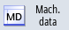

You can access the following setting data via the user interface in the "Startup" operating area.
Procedure
 | 1. | Select the "Start-up" operating area. |
|  | 2. | Press the "Mach. data" softkey. |
 | 3. | Press the menu forward key. The softkeys "General SD", "Channel SD", and "Axis SD" are displayed. |
| | 4. | Press the relevant softkey to display a particular setting data area. The window opens and the selected setting data is displayed. |
| | 5. | Place the cursor on the desired setting data and position the cursor on the entry to be changed. Enter the desired value. |
| | 6. | Depending on the activation type, there are two ways of activating the settings: |
 | | Press the "Activate MD (cf)" softkey. |
| | | - OR - |
 | | Press the "Reset (po)" softkey. A safety prompt appears. |
 | 7. | Press the "OK" softkey to trigger a warm restart. |
| | | - OR - |
 | | Press the "Cancel" softkey if you do not want to apply the settings. |
Axis/channel selection
If several components are available for the area selected (e.g. "Axis SD" or "Channel SD"), you can choose from the following options:
  | 1. | Press the "Axis +" or "Axis -" or "Channel +" or "Channel -" softkey. The values of the next (+) and the previous axis/channel (-) are displayed. |
| | | - OR - |
| | | Press the "Direct selection..." softkey. The "Direct Selection" window opens. |
| | 2. | Select the required axis directly from those available in the drop-down list box. |
| | 3. | Press the "OK" softkey to save the setting. |
| | | - OR - |
| | | Press the "Cancel" softkey to reject the setting. |